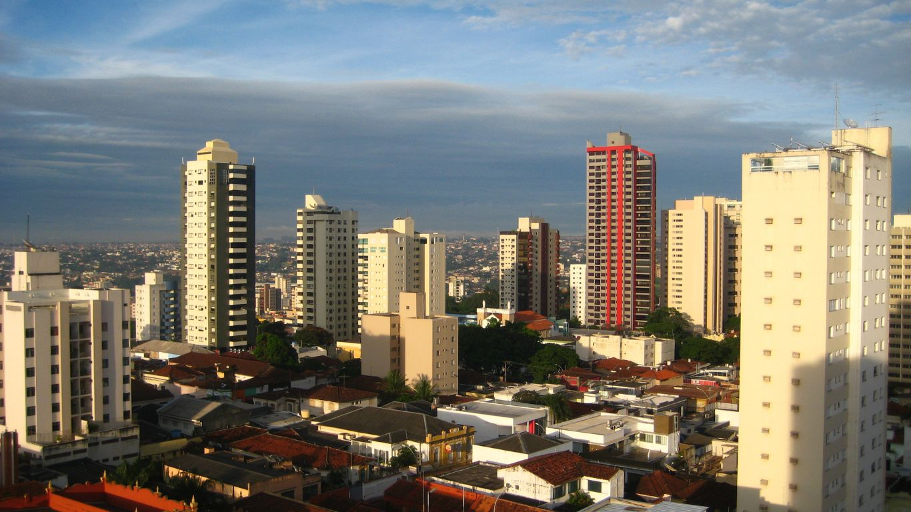

Clima de Uberlândia-MG
O que caracteriza o clima uberlandense?
O clima de Uberlândia (MG) é caracterizado como tropical com estação seca. Aqui estão os principais traços que caracterizam o clima uberlandense:
- Média anual: Entre 20°C e 24°C
- Verões: Quentes, com temperaturas que frequentemente ultrapassam os 30°C
- Invernos: Amenos, com mínimas que raramente caem abaixo de 10°C
Outras características:
- Céu geralmente limpo na estação seca
- Alta incidência de radiação solar ao longo do ano
- Propício para atividades agrícolas, especialmente no verão

Imagem de Uberlândia, 2025